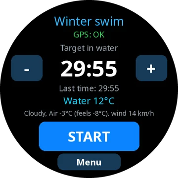

Cold Dip
Otužování, zimní plavání a sauna — změřené na hodinkách Amazfit, s tepem, GPS a historií.
Aplikace je podaná a čeká na recenzi. Až ji přijmou, toto tlačítko otevře kartu v Zepp App Store.
7 dní zdarma se všemi funkcemi, potom jednorázové odemčení za 4,99 USD přes KiezelPay. Bez předplatného.
Jak to funguje
Krátký pohled na jedno koupání, od úvodní obrazovky po to, jak jste se cítili.
Podívejte se na sezení
- Otevřete Cold Dip na břehu. Nastavte teplotu vody tlačítky − / + a stiskněte START.
- Na břehu: časovač běží, zatímco se chystáte. Stiskněte, když vcházíte do vody.
- Ve vodě: čas ve vodě, tep, teplota vody a GPS při plavání ve volné vodě. Stiskněte, když vycházíte.
- Po výstupu: čas od opuštění vody a odpočet zahřívání (afterdrop).
- Sauna, pokud ji používáte: aplikace měří kolo, potom se vrátíte do vody, nebo skončíte.
- Jak se cítíte, 1–5, a uložení. Historie a rekordy zůstanou na hodinkách.
Snímky obrazovky
Stejné sezení na kulatých i obdélníkových hodinkách Amazfit.
Kulaté hodinky

Start 
Na břehu 
Ve vodě 
Po výstupu 
Sauna 
Pocit
Obdélníkové hodinky

Start 
Na břehu 
Ve vodě 
Po výstupu 
Sauna 
Pocit
Cena
Platí se za celou aplikaci — později není žádné samostatné odemčení „Pro“.
- 7 dní zdarma se všemi funkcemi, od prvního otevření aplikace.
- Potom jednorázové odemčení za 4,99 USD přes KiezelPay (kzl.io). Hodinky ukážou kód, platíte v prohlížeči.
- Bez předplatného. Aplikace nevidí údaje o kartě. Platbu zajišťuje KiezelPay.
Podporované hodinky Amazfit
Cold Dip běží na Zepp OS 3 (API 3.0) a novějších. Přesný seznam modelů ukáže obchod, až Zepp balíček přijme.
- Balance Balance, Balance 2, Balance 2 XT, Balance 3, Balance Ultra
- Active Active, Active 2 (round and square), Active 3 Premium, Active Edge, Active Max
- T-Rex T-Rex 3, T-Rex 3 Pro, T-Rex Ultra, T-Rex Ultra 2
- Cheetah Cheetah (round and square), Cheetah Pro, Cheetah 2 Pro, Cheetah 2 Ultra
- GTR / GTS / Falcon GTR 4, GTS 4, Falcon
- Bip Bip 5 Unity, Bip 6, Bip Max
Bip 5 Unity nemá GPS. U profilů s trasou se ukáže „hledám GPS…“; zbytek aplikace funguje.
Nepodporované (starší Zepp OS): GTR 3, GTS 3, GTS 4 Mini, GTR Mini, Bip 5 (model bez Unity), T-Rex 2 a Band 7.
Soukromí a počasí
Žádný účet, žádná analytika, žádné reklamy. Tep, GPS a historie sezení zůstávají na hodinkách.
Když je telefon připojený, počasí (teplota vzduchu, vítr, podmínky) pochází z MET Norway Locationforecast 2.0, pod licencí CC BY 4.0. Odesílá se jen přibližná poloha na api.met.no. Zdroj: © MET Norway (CC BY 4.0).